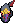

寶可夢 Wonderful
百科
繁中・非官方
原文
開始遊戲
首頁
指南
寶可夢
道具
招式
地圖
活動
道館與聯盟
系統
果園
經濟
公會
更新
常見問題
首頁
›
道具
› 黏液
黏液
Sticky Goo
道具
毒寶可夢的黏糊糊黏液。不可食用。可以賣給商店。
效果
從背包使用：「貴重物品。可以高價賣給友好商店。」
取得方式
任何友好商店都不販售。賣給友好商店可得
8
野生寶可夢掉落：
寶可夢
機率
數量
阿柏怪
10%
1
尼多蘭
10%
1
尼多娜
10%
1
尼多后
10%
1
尼多朗
10%
1
尼多力諾
10%
1
尼多王
10%
1
臭泥
10%
1
臭臭泥
10%
1
瓦斯彈
10%
1
雙彈瓦斯
10%
1
溶食獸
10%
1
吞食獸
10%
1

飯匙蛇
10%
1
臭鼬噗
10%
1
坦克臭鼬
10%
1
鉗尾蠍
10%
1
龍王蠍
10%
1
不良蛙
10%
1
毒骷蛙
10%
1
 阿柏怪
阿柏怪 尼多蘭
尼多蘭 尼多娜
尼多娜 尼多后
尼多后 尼多朗
尼多朗 尼多力諾
尼多力諾 尼多王
尼多王 臭泥
臭泥 臭臭泥
臭臭泥 瓦斯彈
瓦斯彈 雙彈瓦斯
雙彈瓦斯 溶食獸
溶食獸 吞食獸
吞食獸 臭鼬噗
臭鼬噗 坦克臭鼬
坦克臭鼬 鉗尾蠍
鉗尾蠍 龍王蠍
龍王蠍 不良蛙
不良蛙 毒骷蛙
毒骷蛙